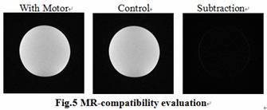
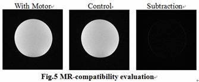

|
MR磁場を利用するアクチュエータに関する研究 1．はじめに より安全で精確な手術の実現を目的として，術中に更新された画像を用いる術中画像誘導下手術と手術支援ロボティクスシステムを融合する術中画像誘導下手術 支援ロボティクスシステムが研究されている．術中画像モダリティとしてはX線被曝なく，また多彩な可視化機能を備えているMRIが有望視されており， MRI誘導下手術支援ロボットへの期待が高まっている． しかし，MRIは強くかつ安定した磁場を必要とするため，ロボットの駆動部としてMR対応アクチュエータの導入が不可欠である．MRI対応アクチュエータ として水圧によるアクチュエータや非磁性超音波モータの採用といった対策がとられている．しかし，両者のアクチュエータはフィードバック制御が必要であ り，その使用は煩雑である． 我々はMR磁場を利用し，オープンループでの位置決めを可能とするアクチュエータを提案した1）．しかし提案した機構に摩擦機構が使用され，安定なトルク が得られず，完全保持と完全フリー状態の実現ができていなかった．そこで本研究では新しい構造を持つMR磁場を利用するアクチュエータの開発を行ったので 報告する． 2．方法 本アクチュエータの駆動原理は従来の電磁アクチュエータの原理を参考にし，MRI装置の静磁場とコイルを用いる．コイルを静磁場の中に置いて電流を流すと 電磁力が発生し，その力によってコイルが回転する．その回転を微小回転運動に制限し，ラチェット機構で積算し回転運動に変換する． 基本的な構成要素はコイル①④⑦，ラチェット爪②⑥⑨⑫，ラチェットギア③，振動子⑪からなる(Fig.1)．３つのコイル①④⑦はそれぞれの軸を通して 固定され，電磁力によって回転する．ノック機構⑧と駆動用爪⑨⑫が組み込まれる振動子⑪は主コイル④と固定される．制止用爪②⑥の軸は外のカバーに固定さ れ，ラチェットコイル①⑦によって開閉状態が制御される．4つの爪②⑥⑨⑫の開閉によって正転，逆転，保持，フリーという4つの状態が生まれる．停止とフ リー状態を持つことによって術者の手動によるラフな位置決めとモータ駆動による精密な動作，そして万一事故が起きた際に手動で取外すという passive/activeの動作切り替えができるようになる．Fig.2に反時計回り方向(CCW)の1ステップ回転を示す．製作したアクチュエータ (120 x 69 x 89 mm3, 756 gram)はFig.3に示す．
3．評価 アクチュエータをLinux環境のPCで制御した．0.2[T]の磁場環境下で位置決めを可能にするステップ状の回転や正転，逆転，完全停止，完全フリーという4つの状態が確認された．以下アクチュエータの性能について述べる． 出力トルクは以下のFig.4に示す． 時計回り回転(CW)ステップ角が12.0±0.4 deg (n=10)であり，反時計回り回転(CCW)のステップ角が12.0±0.2 deg (n=10)であった． 時計回り→反時計回りのバックラッシが0.04±0.16 deg(n=10)であり，反時計回り→時計回りのバックラッシが–0.04±0.26 deg(n=10)であった． S/N比の低下率は1%以内に収まった．これは通常のばらつきよりも小さく，無視できる値と言える．アクチュエータによる画像のひずみはほとんど見られなかった(Fig.5)．
4．まとめ MR磁場を利用するアクチュエータを開発した．性能評価実験を行った結果，位置決め精度が高く，MR対応であることが分かった．これによりMRI環境下における手術支援ロボットに応用可能なオープンループ位置決めアクチュエータの実現可能性が示された． 文献
|

|
お問い合わせ Japanese | English |
 
